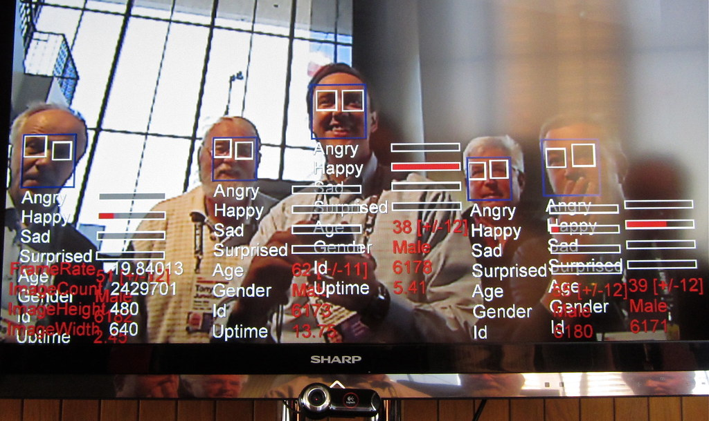

German buying cycles do not run the way American ones do. If you are shortlisting a German fintech API developer India firms get recommended for, the questions arrive in a fixed order: who signs the data processing agreement, where does the data sit, which supervisor is in scope.
Viantha Solutions builds API integrations for fintechs, lenders and enterprise teams from Tiruchirappalli (Trichy) in Tamil Nadu, with headquarters in Singapore. This guide covers what German companies hand offshore, how PSD2 access behaves at the bank boundary, and what BaFin-shaped compliance asks of a vendor.
Whether the project is an open banking API PSD2 Germany build or a BaFin-scoped KYC flow, the evaluation order rarely changes: data protection and hosting first, architecture second, rate third.
Key Takeaways
- PSD2 access runs through Berlin Group XS2A interfaces. Surviving each bank's quirks matters more than reciting the specification.
- BaFin supervises the institution, not your vendor. What you need is evidence: logs, access records, clean environments.
- Your Auftragsverarbeitungsvertrag exists before the first commit, not after the pilot.
- Germans buy documentation. Written scope, decision logs and handover notes are the deliverable.
In This Guide
What German Companies Actually Hand to an Offshore Team
The work that outsources cleanly has a specification someone can review. Three categories keep coming up.
KYC and onboarding flows
German onboarding has to satisfy money laundering rules under GwG, meet BaFin record-keeping expectations and clear the bank's risk committee. That is where a BaFin KYC compliance software India team is useful: wiring document capture, video ident and sanctions screening, managing rejected states, and producing the evidence trail auditors ask for.
Open banking and account data
A Germany Open Banking PSD2 API developer spends most of the project at the boundary between the standard and the bank: consent screens, payment initiation, SCA redirects, error codes that map to nothing in the specification. The standard is written down. The behaviour is discovered.
Internal systems and enterprise glue
Most German enterprise work is not greenfield. It is a loan origination system that re-keys data into two other tools, a payment file that should flow without an operator, or a console replacing a spreadsheet nobody admits to using. The edges are visible.
PSD2, XS2A and What the Banks Actually Ship
PSD2 is the EU payment services directive, and in Germany bank access is exposed through Berlin Group's XS2A interfaces. Every integration starts optimistically: the documentation is clear, the conformance suite passes, and then a production bank returns an error string with nobody's mapping on it.
German buyers sometimes search for a Deutsche Bank API integration developer India or ask which interfaces we have seen. Honest answer: our engineers work against Berlin Group style endpoints from many institutions and read your bank's documentation rather than pretend familiarity transfers. The same goes for a brief naming an N26 API integration developer. What people usually mean is the API patterns neobanks like N26 have made standard: clean REST resources, idempotent payment endpoints, webhook subscriptions with replay.
If your roadmap includes a new XS2A connection, start with a scoped piece of it rather than a transformation programme.
BaFin, GDPR and the Paperwork That Comes With It
BaFin is Germany's financial supervisory authority. It oversees banks and financial services institutions under the KWG, and it does not certify your software house. Hiring an offshore vendor moves no obligation away from your management board. What a vendor can do is make compliance cheaper by producing evidence as a by-product: access logs, environment separation, commit history.
GDPR enforcement in Germany is strict, and works councils take an interest in anything touching employee or customer data. You need an Auftragsverarbeitungsvertrag with the processor before work begins, a record of processing activities that names us, and answers for your data protection officer on sub-processors and locations. We sign the AVV, work inside your access controls, and keep personal data out of development.
One unglamorous warning: security reviews and data processing negotiations routinely take longer than the build they clear. Three to five weeks from first contact to a signed AVV is normal for a German enterprise. Start that paperwork on day one, in parallel with technical discovery.
Where an engagement touches your internal teams, our IT staffing practice can place engineers who have worked under those conditions.

SAP and Enterprise Integration Territory
Any serious conversation about German enterprise IT eventually reaches SAP, which is why a team positioning itself as an SAP fintech integration developer India option has to be precise about what that means. We are not an SAP consultancy. What we build is the layer around it: SAP APIs and middleware, IDoc and OData exchange, event feeds into Spring Boot services, and reconciliation jobs that prove both sides agree.
That distinction matters in a German procurement conversation. A vendor who claims everything usually survives one technical call, and rarely the rest of the project.
Why German Companies Build Offshore in India
Cost opens the door. Documentation keeps the engagement alive, which is not a sentence you expect from an offshore vendor, yet it is the reality with German clients. Scope notes, meeting minutes and pull request descriptions get read, and vague documentation is treated as a risk signal.
When it comes to Indian IT outsourcing Germany is a mature and crowded market, and the price stopped being the differentiator years ago. What decides the outcome is whether the team stays. Our engineers work out of Trichy, where retention beats the big metros, so the person who mapped your error codes in month two is still there for the conformance review in month nine. We work as a German enterprise API developer offshore team with no account manager between you and the code.
Language splits the same way it does for Swiss clients. English engineering conversations are fine and always have been. Anything heading to a steering committee or a legal file benefits from a German reader, and we say so early.
Engagement, Hours and How the Engagement Actually Runs
Time zones are simpler than for US clients. India Standard Time is 4.5 hours ahead of Berlin in winter and 3.5 in summer, so a 9:00 standup in Munich falls into our afternoon. A fixed overlap window goes in the engagement note: decisions inside it, deep work either side.
How an engagement starts:
- Week 1, discovery. Our engineer and yours walk the system together. You get a written scope.
- Weeks 2 to 4, paid pilot. A single integration, delivered into your repository on your infrastructure.
- Month 2 onward, dedicated team. Same engineers, wider scope, weekly demo rather than status mail.
Work happens in your tooling and your repository. If the pilot expands, tell us what changed.
Questions That Expose Weak Vendors Fast
- "Who signs your AVV and when?" A vendor who has never heard of the Auftragsverarbeitungsvertrag has never sold into Germany.
- "Show me an XS2A integration you have done and the bank-specific problems you hit." You want concrete quirks, not a recital of the specification.
- "What happens when a webhook fires twice?" Idempotency keys in the answer, or they have not run payments in production.
- "Can we start with a two to four week paid pilot?" Refusal tells you where the incentives sit.
FAQs German Clients Ask Us
Are you an offshore developer for German fintech API integration from India?
Yes. We are that offshore developer for German fintech API integration from India: PSD2 and Berlin Group XS2A connections, BaFin-shaped KYC flows and integration work around SAP systems, built from Trichy in Tamil Nadu on Spring Boot, React and AWS.
Can you sign a German data processing agreement (Auftragsverarbeitungsvertrag)?
Yes. We sign the AVV as the processor before development starts, work inside your access controls, keep personal data out of development environments, and hand your data protection officer the documentation they ask for. GDPR stays with you as controller.
Do you integrate PSD2 and Berlin Group XS2A interfaces?
Yes: consent flows, account information services, payment initiation, SCA redirect handling, error mapping and webhook reconciliation. Each bank behaves differently, so we budget for sandbox quirks. Send us their documentation and we will scope your open banking connection.
How does an engagement with your German-facing team start?
A discovery week that produces a written scope, then a two to four week paid pilot on one integration. Overlap hours go in writing: IST runs 4.5 hours ahead of Berlin in winter, so German mornings land in our afternoon.
Talk to an Engineer, Not a Sales Rep
Describe the integration you need and the system it has to fit into. we will tell you honestly what it takes and whether we are the right team for it.
Start a Conversation Explore Services